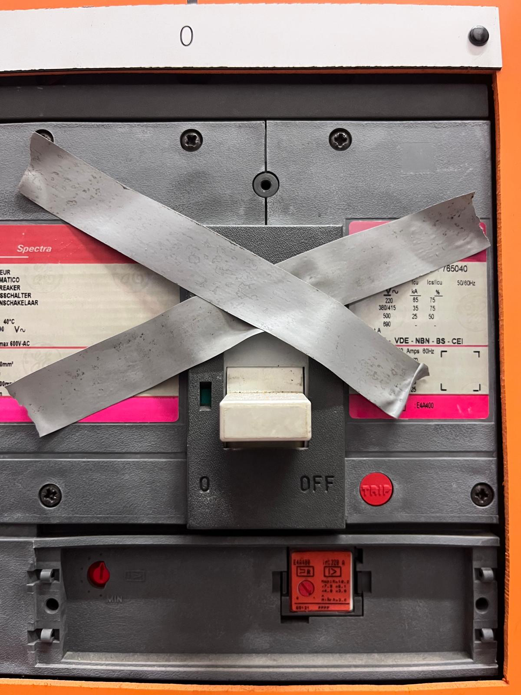

Kring 14 k14
Hefbrug werkplaats · SVB-B · Stelplaats Mechelen › Werkplaats
3 events in 6 maanden
staat nu uit
UIT
Kring 14
Uit sinds 12 maart door Peeters — “defect armatuur, niet vrijgeven”
Todo: Kring 14 vrijgeven na controle — Peeters · geen termijn
chronologie
12-03
Kring 14 uitgezet
Peeters · staat nog open
04-03
Kabelherstelling
De Wilde Elektro · 1 foto
Eenmalig uitgenodigd door Geert Vermeulen. Werk aan de grondkabel, buiten de kast.

Foto 04-03 · De Wilde ElektroPlaatsvervangende foto. De echte bewijsfoto hoort de herstelde grondkabel te tonen, niet de kast — vervang dit beeld voor de sessie met Jan.
06-11-2025
Kring 14 bijgeplaatst
Jan Verhoeven
De pdf’s en losse eventschermen zitten niet in dit prototype.